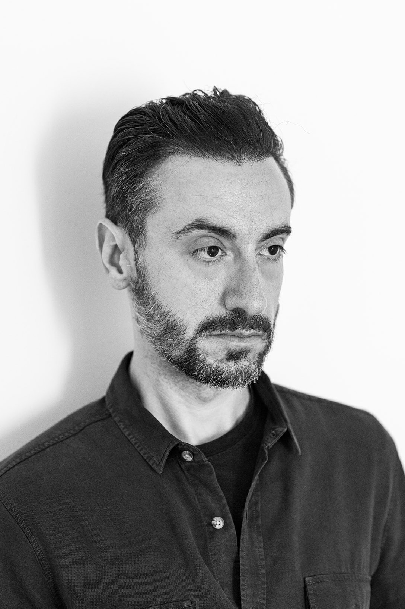

Based in Lisbon, I am a Brazilian photographer working across portraiture, editorial photography and cultural heritage.
Born and raised in São Paulo, my background was shaped through more than two decades working in photography and journalism.
I worked as photo editor at UOL, one of Brazil’s largest news platforms, collaborating with freelance photographers and editing visual coverage for in-depth reports, cultural features and major events.
Throughout my career, I have collaborated with publications including Folha de S. Paulo, Editora Abril, Editora Globo and Editora Trip.
My current work focuses on portraiture, documentary photography and visual narratives connected to memory, place and cultural identity. Available for editorial, institutional and commissioned projects in Portugal and across Europe.